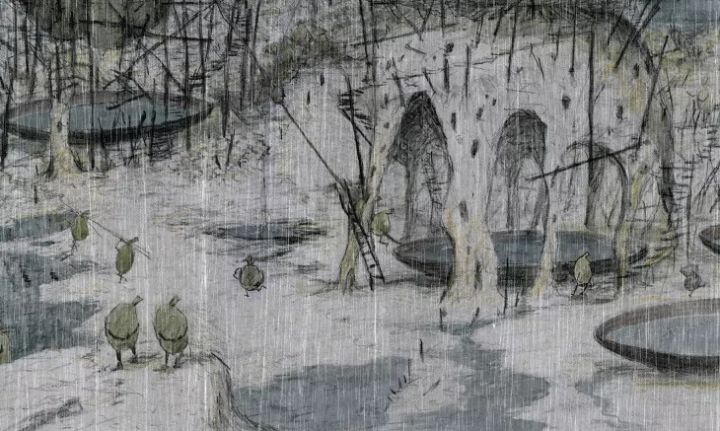

I'll open by saying I'm a long-time fan of Koji Yamamura, after seeing his short film based on Franz Kafka's "A Country Doctor" a couple decades ago. He's the defacto face of indie animation in Japan, in part because of how wildly different his works are compared to the the huge volumes of anime that the country is famous for. And when I heard that he made a full-length feature film, his first (to my knowledge) after a long career of acclaimed shorts, I was intrigued. Also concerned, because most of his shorts lack narrative all together, and are more experimental experiences of random visual ideas. Indeed, that's exactly what "Dozens of Norths" is. It opens with a writer desparately struggling to write down what he's witnessed in the many different "Norths" he's traveled to. There's no dialogue, but there are text cards overlaid on the visuals like classic silient films. An early card explains the writer's dilema: "... but my memories are scrambled and don't make any sense." It's a bit of self-aware humour that appears a few times throughout the movie, but also makes it clear that you won't get much, if any, story. We don't know why the writer is writing, or whether he's successful. We'll see scenes like a collection of snails under the bottom of a table. Or a society of water jugs trying to stop their water tower from leaking. Or a naked man watching a marionette show, where a marionette is controlled by a marionette, controlled by a marionette, and so on in infinity. The scenes are all abstract, and dont' seem to have any meaning to each other. It made me think of one of his recent shorts, 2016's 15-minute "Parade," which also featured a ton of random imagery repeating on itself. I suspect that "Dozens of Norths" was meant to be another long-form short, but that he had enough extra ideas to expand it to just barely an hour. Or that this is made up of a book of leftover ideas that he didn't use over the past decade. Perhaps that's freeing to a creator, but it asks a lot on the viewer to sit through. Thankfully, Yamamura's incredible pencil-sketch style is beautiful to watch, and that proves true here. But it also looks like it was largely animated by one man. Each shot features repeated animation (sometimes, just a cycle of 3 - 5 frames to simulate an alive character or wind), with the camera slowly panning, sometimes zoomed in, sometimes zoomed out. A single shot that might have lasted 5 seconds in a normal movie can last over a minute here. The music is typical for the artist's work, whimsical with a faint sense of dread.  "Dozens of Norths" is an interesting exercise, with some fascinating images and fun insights through subtitled thoughts. But the lack of a narrative structure hurts it, and I'd recommend watching some of Yamamura's shorts catelog first, to save you a lot of time, before deciding if this is worth sitting through. Or maybe just putting it on in the background while you do something else to set the atmosphere in your mind.
- "Ani" More reviews can be found at : https://2danicritic.github.io/ Previous review: review_Doreiku_-_The_Animation Next review: review_Dragon_Ball_Super_-_Broly